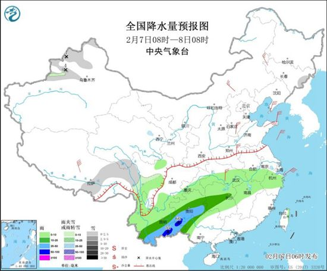

预计，今天（2月7日）开始，南方多地将迎来大范围较强降雨，华南等地久旱逢甘露，有利于缓和当地气象干旱。气温方面，今明两天，中东部自北向南将陆续降温，东北中北部气温短暂转为气温偏低的状态，江淮、江南等地湿凉回归，但降温过后，各地仍将维持“立春暖”。
立春以来，全国气温以回升为主，尤其是过去两天，部分地区温暖程度如春分时节（3月下旬-4月上旬）。昨天白天，黄河至长江流域以及江南北部等地气温继续攀升，黄淮、江淮等地的温暖还在进一步加码，午后这里的最高气温普遍都将达到15℃以上，其中，河南部分地区最高气温超过20℃，郑州14时气温达到21.1℃，成为北方今年首个突破20℃的省会级大城市。
但随着冷空气的到来，今明两天，中东部自北向南气温将陆续下降。北方今天降温显著，东北大部气温下降，东北中北部气温将短暂转为偏低的状态，黄河一带气温下降将达6~12℃。明天在冷空气和雨水的共同作用下，江淮、江南等地将普遍出现4~8℃降温，由晴暖再次转为湿凉。
虽然本周末冷空气给我国中东部多地带来了气温波动，但未来几天，大部地区气温仍不改偏高格局，北方和南方多地都将有气温创新高出现，立春回暖仍是主要天气特点，降温过后，各地仍能继续享受立春暖的“福利”。
昨天，南方大范围降雨还未铺展开来，主要集中在西南地区，早晨至上午，长江流域出现大范围的大雾天气，午后能见度总体好转。
预计，今天开始至2月10日，随着南支槽的东移，西南气流增强，云南到华南地区将迎来从去年9月中旬以来最强的一轮降雨过程，云南南部、贵州南部、华南和江南中南部等地有中到大雨，部分地区暴雨，局地有大暴雨。
其中，今明两天是云南降水的主要时段，华南的降雨的主要时段为2月9日至10日，预计到2月11日，也就是除夕，南方的降雨将明显收缩。

自去年12月以来，从云南至华南、江南南部一带降水明显偏少，气象干旱持续发展，广西、广东、湖南局地出现特旱，本轮降水过程将有利于缓和当地旱情、降低森林火险。